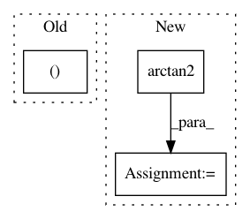

0fa27094ece290eef30e195be2a4dafafe01e485,starry/Map/Map.py,Map,flux,#Map#Any#Any#Any#,19
Before Change
// TODO Rz = ?
sTARz, _ = theano.scan(
fn=lambda sTA, Rz: tt.dot(sTA, Rz),
sequences=[sTA, Rz]
)
After Change
sTA = ts.dot(sT, A)
theta = tt.arctan2(xo, yo) * 180.0 / np.pi
sTARz = self._ops.dotRz(sTA, theta)
return tt.dot(sTARz, self.y)
In pattern: SUPERPATTERN
Frequency: 3
Non-data size: 3
Instances
Project Name: rodluger/starry
Commit Name: 0fa27094ece290eef30e195be2a4dafafe01e485
Time: 2019-05-14
Author: rodluger@gmail.com
File Name: starry/Map/Map.py
Class Name: Map
Method Name: flux
Project Name: daavoo/pyntcloud
Commit Name: a15c8e19f9270ba69758528b0df2cfc362b601af
Time: 2017-06-21
Author: daviddelaiglesiacastro@gmail.com
File Name: pyntcloud/geometry/coord_systems.py
Class Name:
Method Name: cylindrical_to_spherical
Project Name: ray-project/ray
Commit Name: ce96b03b07a4a4bdd851aa84493c616cd291aff2
Time: 2020-10-06
Author: sven@anyscale.io
File Name: rllib/examples/env/mbmpo_env.py
Class Name: HopperWrapper
Method Name: reward